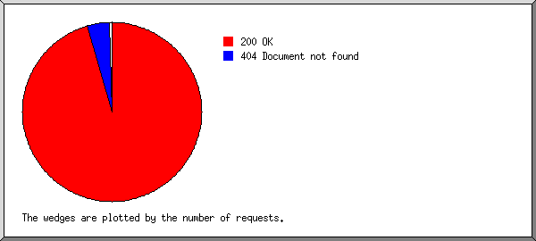

Web Server Statistics for rfnoise.amsatsa.org.za
Web Server Statistics for rfnoise.amsatsa.org.za
Program started at Tue-31-Jul-2018 00:01.
Analysed requests from Mon-16-Jul-2018 07:53 to Mon-30-Jul-2018 23:50 (14.66 days).
Web Server Statistics for rfnoise.amsatsa.org.zaProgram started at Tue-31-Jul-2018 00:01.
Analysed requests from Mon-16-Jul-2018 07:53 to Mon-30-Jul-2018 23:50 (14.66 days).
(Go To: Top | General Summary | Monthly Report | Daily Summary | Hourly Summary | Domain Report | Organisation Report | Operating System Report | Status Code Report | File Size Report | File Type Report | Directory Report | Request Report)
This report contains overall statistics.
Figures in parentheses refer to the 7-day period ending 31-Jul-2018 00:01.
Successful requests: 738 (462)
Average successful requests per day: 50 (65)
Successful requests for pages: 253 (169)
Average successful requests for pages per day: 17 (24)
Failed requests: 369 (188)
Redirected requests: 28 (3)
Distinct files requested: 138 (117)
Distinct hosts served: 85 (47)
Data transferred: 106.55 megabytes (71.72 megabytes)
Average data transferred per day: 7.27 megabytes (10.25 megabytes)
(Go To: Top | General Summary | Monthly Report | Daily Summary | Hourly Summary | Domain Report | Organisation Report | Operating System Report | Status Code Report | File Size Report | File Type Report | Directory Report | Request Report)
This report lists the activity in each month.
Each unit ( ) represents 8 requests for pages or part thereof.
) represents 8 requests for pages or part thereof.
| month | reqs | pages | |
|---|---|---|---|
| Jul 2018 | 738 | 253 |  |
Busiest month: Jul 2018 (253 requests for pages).
(Go To: Top | General Summary | Monthly Report | Daily Summary | Hourly Summary | Domain Report | Organisation Report | Operating System Report | Status Code Report | File Size Report | File Type Report | Directory Report | Request Report)
This report lists the total activity for each day of the week, summed over all the weeks in the report.
Each unit () represents 2 requests for pages or part thereof.
| day | reqs | pages | |
|---|---|---|---|
| Sun | 117 | 37 |   |
| Mon | 103 | 32 | |
| Tue | 258 | 75 |  |
| Wed | 98 | 62 |  |
| Thu | 73 | 23 | |
| Fri | 59 | 17 | |
| Sat | 30 | 7 | |
(Go To: Top | General Summary | Monthly Report | Daily Summary | Hourly Summary | Domain Report | Organisation Report | Operating System Report | Status Code Report | File Size Report | File Type Report | Directory Report | Request Report)
This report lists the total activity for each hour of the day, summed over all the days in the report.
Each unit () represents 1 request for a page.
| hour | reqs | pages | |
|---|---|---|---|
| 0 | 16 | 5 | |
| 1 | 9 | 3 | |
| 2 | 17 | 11 | |
| 3 | 7 | 6 | |
| 4 | 7 | 5 | |
| 5 | 7 | 5 | |
| 6 | 21 | 11 | |
| 7 | 27 | 11 | |
| 8 | 9 | 2 | |
| 9 | 44 | 17 | |
| 10 | 36 | 9 | |
| 11 | 28 | 10 | |
| 12 | 111 | 17 | |
| 13 | 53 | 16 | |
| 14 | 39 | 20 | |
| 15 | 36 | 10 | |
| 16 | 15 | 8 | |
| 17 | 9 | 7 | |
| 18 | 35 | 12 | |
| 19 | 44 | 19 | |
| 20 | 60 | 31 | |
| 21 | 10 | 5 | |
| 22 | 15 | 9 | |
| 23 | 83 | 4 | |
(Go To: Top | General Summary | Monthly Report | Daily Summary | Hourly Summary | Domain Report | Organisation Report | Operating System Report | Status Code Report | File Size Report | File Type Report | Directory Report | Request Report)
This report lists the countries of the computers which requested files.
Listing domains, sorted by the amount of traffic.
| reqs | %bytes | domain |
|---|---|---|
| 738 | 100% | [unresolved numerical addresses] |
(Go To: Top | General Summary | Monthly Report | Daily Summary | Hourly Summary | Domain Report | Organisation Report | Operating System Report | Status Code Report | File Size Report | File Type Report | Directory Report | Request Report)
This report lists the organisations of the computers which requested files.

Listing the top 20 organisations by the number of requests, sorted by the number of requests.
| reqs | %bytes | organisation |
|---|---|---|
| 170 | 32.61% | 192.143 |
| 107 | 15.32% | 66.249 |
| 92 | 8.25% | 196.8 |
| 89 | 10.38% | 197.245 |
| 82 | 7.71% | 41 |
| 46 | 6.75% | 105 |
| 22 | 7.60% | 102 |
| 14 | 0.03% | 196.11 |
| 11 | 0.01% | 54 |
| 10 | 3.79% | 95 |
| 9 | 0.02% | 143.160 |
| 8 | 0.23% | 46 |
| 7 | 0.74% | 148.251 |
| 6 | 0.01% | 196.220 |
| 6 | 1.44% | 167.114 |
| 6 | 1.28% | 192.151 |
| 5 | 1.32% | 204.12 |
| 5 | 0.76% | 62.210 |
| 5 | 0.30% | 178.151 |
| 4 | 34 | |
| 34 | 1.46% | [not listed: 19 organisations] |
(Go To: Top | General Summary | Monthly Report | Daily Summary | Hourly Summary | Domain Report | Organisation Report | Operating System Report | Status Code Report | File Size Report | File Type Report | Directory Report | Request Report)
This report lists the operating systems used by visitors.

Listing operating systems, sorted by the number of requests for pages.
| no. | reqs | pages | OS |
|---|---|---|---|
| 1 | 468 | 168 | Unix |
| 468 | 168 | Linux | |
| 2 | 61 | 42 | Windows |
| 22 | 16 | Windows NT | |
| 26 | 13 | Windows 7 | |
| 13 | 13 | Windows XP | |
| 3 | 99 | 39 | OS unknown |
| 4 | 28 | 3 | Known robots |
| 5 | 4 | 1 | Macintosh |
(Go To: Top | General Summary | Monthly Report | Daily Summary | Hourly Summary | Domain Report | Organisation Report | Operating System Report | Status Code Report | File Size Report | File Type Report | Directory Report | Request Report)
This report lists the HTTP status codes of all requests.

Listing status codes, sorted numerically.
| reqs | status code |
|---|---|
| 678 | 200 OK |
| 6 | 301 Document moved permanently |
| 22 | 302 Document found elsewhere |
| 60 | 304 Not modified since last retrieval |
| 359 | 404 Document not found |
| 10 | 500 Internal server error |
(Go To: Top | General Summary | Monthly Report | Daily Summary | Hourly Summary | Domain Report | Organisation Report | Operating System Report | Status Code Report | File Size Report | File Type Report | Directory Report | Request Report)
This report lists the sizes of files.

| size | reqs | %bytes |
|---|---|---|
| 0 | 0 | |
| 1B- 10B | 0 | |
| 11B- 100B | 0 | |
| 101B- 1kB | 156 | 0.05% |
| 1kB- 10kB | 404 | 1.02% |
| 10kB-100kB | 76 | 1.20% |
| 100kB- 1MB | 74 | 19.53% |
| 1MB- 10MB | 28 | 78.20% |
(Go To: Top | General Summary | Monthly Report | Daily Summary | Hourly Summary | Domain Report | Organisation Report | Operating System Report | Status Code Report | File Size Report | File Type Report | Directory Report | Request Report)
This report lists the extensions of files.

Listing extensions with at least 0.1% of the traffic, sorted by the amount of traffic.
| reqs | %bytes | extension |
|---|---|---|
| 344 | 95.44% | .php [PHP] |
| 169 | 3.53% | [directories] |
| 94 | 0.59% | .png [PNG graphics] |
| 19 | 0.29% | .js [JavaScript code] |
| 84 | 0.11% | .html [Hypertext Markup Language] |
| 28 | 0.04% | [not listed: 4 extensions] |
(Go To: Top | General Summary | Monthly Report | Daily Summary | Hourly Summary | Domain Report | Organisation Report | Operating System Report | Status Code Report | File Size Report | File Type Report | Directory Report | Request Report)
This report lists the directories from which files were requested. (The figures for each directory include all of its subdirectories.)

Listing directories with at least 0.01% of the traffic, sorted by the amount of traffic.
| reqs | %bytes | directory |
|---|---|---|
| 307 | 99.35% | /hf_noise/ |
| 317 | 0.47% | [root directory] |
| 69 | 0.16% | /report/ |
| 45 | 0.02% | [not listed: 3 directories] |
(Go To: Top | General Summary | Monthly Report | Daily Summary | Hourly Summary | Domain Report | Organisation Report | Operating System Report | Status Code Report | File Size Report | File Type Report | Directory Report | Request Report)
This report lists the files on the site.

Listing files with at least 20 requests, sorted by the number of requests.
| reqs | %bytes | last time | file |
|---|---|---|---|
| 148 | 0.23% | 30/Jul/18 17:53 | / |
| 78 | 16.03% | 30/Jul/18 23:50 | /hf_noise/upload/jason_upload.php |
| 74 | 0.75% | 30/Jul/18 16:44 | /hf_noise/date_range_picker/index.php |
| 64 | 0.07% | 30/Jul/18 16:44 | /about_us.html |
| 38 | 0.06% | 30/Jul/18 19:31 | /index.php |
| 34 | 0.05% | 30/Jul/18 16:45 | /register_station.php |
| 30 | 0.08% | 30/Jul/18 11:41 | /hf_noise/date_range_picker/datepicker.png |
| 29 | 0.06% | 29/Jul/18 19:53 | /captcha.php |
| 23 | 51.22% | 30/Jul/18 16:44 | /hf_noise/index.php |
| 220 | 31.45% | 30/Jul/18 12:24 | [not listed: 98 files] |